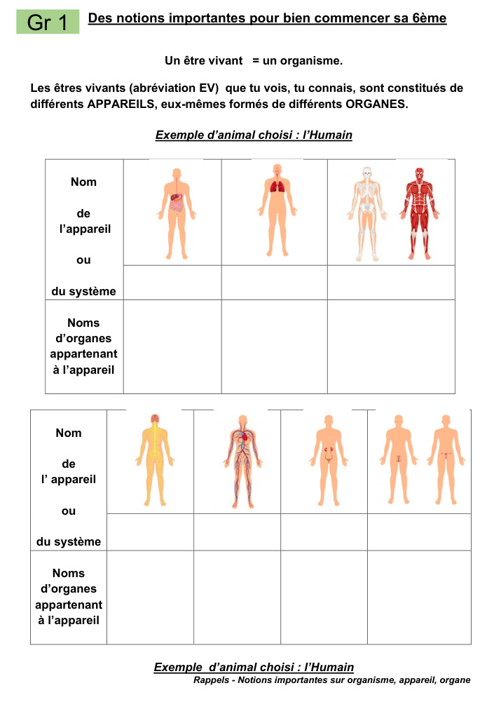
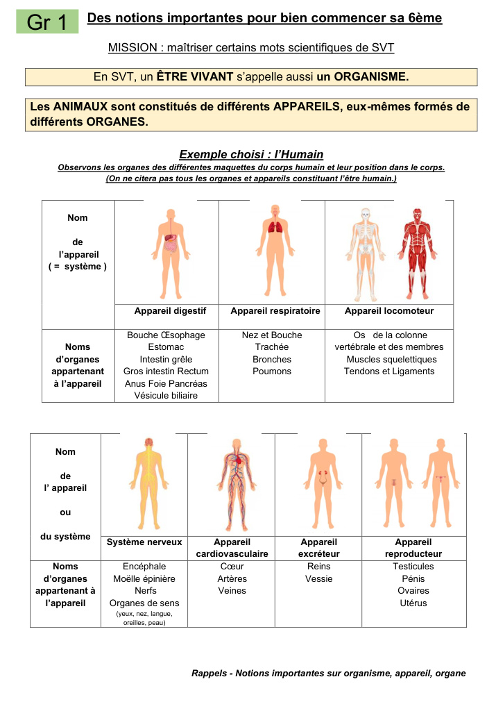
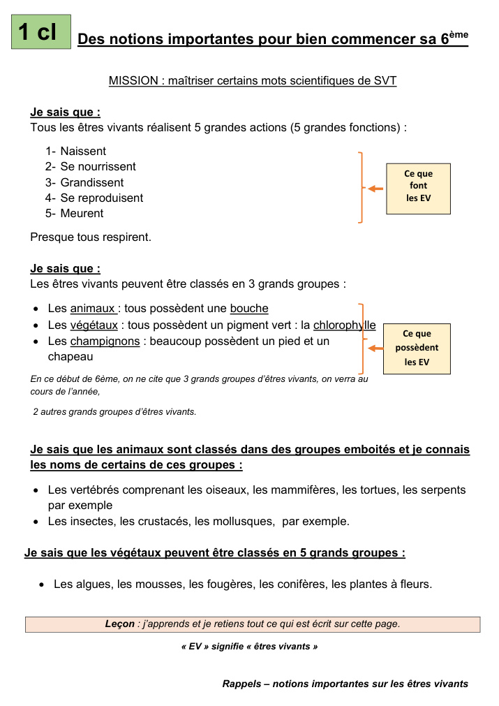
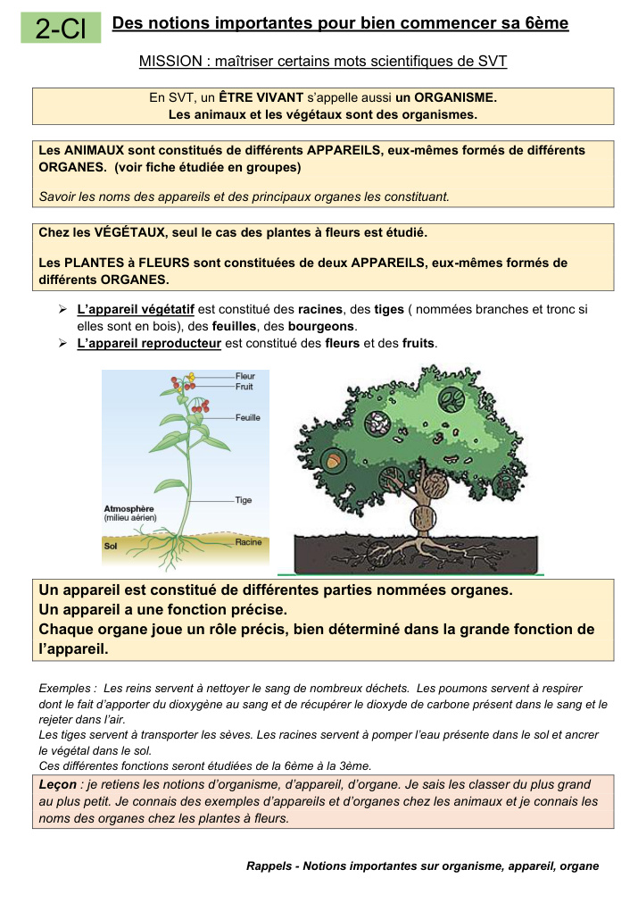

<!DOCTYPE html>
<html lang="fr">
<head>
<meta charset="UTF-8">
<meta name="viewport" content="width=device-width, initial-scale=1.0">
<title>Mission SVT 6e — Le laboratoire des êtres vivants</title>
<style>
:root{
  --bg:#eef3f8; --card:#fff; --ink:#18324a; --muted:#60758a;
  --accent:#2867b2; --accent2:#13a37d; --warn:#e79a24; --bad:#d84b4b;
  --line:#d7e0e8; --shadow:0 8px 25px rgba(24,50,74,.10);
}
*{box-sizing:border-box}
body{margin:0;font-family:system-ui,-apple-system,"Segoe UI",Arial,sans-serif;background:linear-gradient(135deg,#eef5fb,#f6f7f2);color:var(--ink)}
button,input{font:inherit}
button{cursor:pointer}
#app{min-height:100vh}
header{position:sticky;top:0;z-index:10;background:rgba(255,255,255,.95);backdrop-filter:blur(8px);border-bottom:1px solid var(--line)}
.top{max-width:1100px;margin:auto;padding:12px 18px;display:flex;gap:14px;align-items:center}
.brand{font-weight:900;white-space:nowrap}
.progress{flex:1;height:12px;background:#e5ebf0;border-radius:99px;overflow:hidden}
.progress>span{display:block;height:100%;width:0;background:linear-gradient(90deg,var(--accent),var(--accent2));transition:.3s}
.score{font-weight:800;white-space:nowrap}
main{max-width:1050px;margin:auto;padding:28px 18px 50px}
.card{background:var(--card);border:1px solid var(--line);border-radius:22px;box-shadow:var(--shadow);padding:26px}
.center{text-align:center}
h1{font-size:clamp(30px,5vw,52px);line-height:1.02;margin:10px 0 14px}
h2{font-size:30px;margin:5px 0 10px}
h3{margin:8px 0}
p{line-height:1.55}
.small{font-size:14px;color:var(--muted)}
.badge{display:inline-block;border-radius:999px;padding:7px 12px;background:#eaf2fb;color:var(--accent);font-weight:800;font-size:13px}
.btn{border:0;border-radius:13px;padding:12px 18px;background:var(--accent);color:white;font-weight:800;box-shadow:0 4px 10px rgba(40,103,178,.22)}
.btn.secondary{background:#e8eef4;color:var(--ink);box-shadow:none}
.btn.green{background:var(--accent2)}
.btn.warn{background:var(--warn)}
.btn:disabled{opacity:.45;cursor:not-allowed}
.row{display:flex;flex-wrap:wrap;gap:10px;align-items:center}
.grid{display:grid;grid-template-columns:repeat(auto-fit,minmax(230px,1fr));gap:14px}
.choice{width:100%;text-align:left;border:2px solid var(--line);background:white;padding:15px;border-radius:14px;color:var(--ink);transition:.15s}
.choice:hover{border-color:#9bb7d2;transform:translateY(-1px)}
.choice.selected{border-color:var(--accent);background:#edf5ff}
.choice.correct{border-color:var(--accent2);background:#eafaf5}
.choice.wrong{border-color:var(--bad);background:#fff0f0}
.feedback{margin-top:18px;padding:15px 17px;border-radius:14px;border-left:5px solid var(--accent);background:#f1f6fb}
.feedback.good{border-color:var(--accent2);background:#ecfaf5}
.feedback.bad{border-color:var(--bad);background:#fff2f2}
.question{font-size:20px;font-weight:750;line-height:1.4;margin:20px 0}
.question-visual{margin:16px 0 20px;border:1px solid var(--line);border-radius:16px;background:#f7fafc;padding:10px}.question-visual img{display:block;width:100%;max-height:310px;object-fit:contain;border-radius:10px}.question-visual figcaption{font-size:13px;color:var(--muted);padding:7px 4px 2px}.question-visual .visual-label{font-size:12px;font-weight:800;color:var(--accent);margin-bottom:7px;text-transform:uppercase;letter-spacing:.04em}

.timer{font-variant-numeric:tabular-nums;font-weight:900;color:var(--warn)}
.mission-head{display:flex;justify-content:space-between;gap:10px;align-items:flex-start;flex-wrap:wrap}
.kpi{display:flex;gap:10px;flex-wrap:wrap;margin:18px 0}
.kpi div{padding:9px 12px;background:#f2f6f9;border-radius:10px;font-weight:750}
.bar{height:10px;background:#e5ebf0;border-radius:99px;overflow:hidden}.bar span{display:block;height:100%;background:var(--accent2)}
.dragbank{display:flex;flex-wrap:wrap;gap:9px;margin:14px 0}
.drag{padding:10px 13px;border:2px dashed #9bb7d2;border-radius:12px;background:#fff;cursor:grab;font-weight:700}
.dropgrid{display:grid;grid-template-columns:repeat(auto-fit,minmax(210px,1fr));gap:12px}
.dropzone{min-height:90px;border:2px dashed #b9c7d3;border-radius:15px;padding:12px;background:#fafcfd}
.dropzone.over{border-color:var(--accent);background:#edf5ff}
.dropzone h4{margin:0 0 8px}
.item{display:inline-block;background:#eaf2fb;border-radius:8px;padding:6px 8px;margin:3px;font-size:14px}
input.text{width:100%;padding:13px;border:2px solid var(--line);border-radius:12px}
table{width:100%;border-collapse:collapse;margin:12px 0}td,th{border:1px solid var(--line);padding:10px;text-align:left}th{background:#f3f7fa}
.result{font-size:34px;font-weight:900;margin:10px}
.stars{font-size:35px;letter-spacing:4px}
details{background:#f7f9fb;border-radius:12px;padding:10px 13px;margin-top:10px}summary{cursor:pointer;font-weight:800}
.fiche-visuelle{margin-top:24px;text-align:left}
.fiche-visuelle summary{font-size:18px;padding:4px}
.fiche-grid{display:grid;grid-template-columns:repeat(auto-fit,minmax(260px,1fr));gap:14px;margin-top:14px}
.fiche-page{background:#fff;border:1px solid var(--line);border-radius:15px;padding:10px;box-shadow:0 3px 12px rgba(24,50,74,.06)}
.fiche-page img{display:block;width:100%;height:auto;border-radius:10px}
.fiche-page figcaption{font-size:13px;color:var(--muted);padding:8px 4px 2px}


.question-visual{margin:18px auto 20px;max-width:720px;background:#fbfdff;border:1px solid var(--line);border-radius:16px;padding:10px;box-shadow:0 4px 14px rgba(24,50,74,.07)}
.question-visual img{display:block;width:100%;max-height:300px;object-fit:contain;background:white;border-radius:10px;cursor:zoom-in}
.question-visual figcaption{font-size:13px;color:var(--muted);padding:7px 4px 2px;text-align:center}
.visual-label{font-weight:850;font-size:14px;margin:2px 4px 8px}
.zoom-hint{color:var(--accent);font-weight:700}
.visual-set{display:grid;grid-template-columns:repeat(2,minmax(0,1fr));gap:12px;margin:18px 0}
.visual-set .question-visual{margin:0;max-width:none;width:100%}
.visual-set .question-visual img{max-height:260px}
.visual-modal-backdrop{position:fixed;inset:0;background:rgba(10,24,38,.72);z-index:1000;display:flex;align-items:center;justify-content:center;padding:18px}
.visual-modal-card{position:relative;max-width:1000px;max-height:94vh;overflow:auto;background:white;border-radius:18px;padding:18px;box-shadow:0 20px 60px rgba(0,0,0,.3)}
.visual-modal-card img{display:block;max-width:100%;max-height:78vh;width:auto;height:auto;margin:auto;border-radius:10px}
.visual-close{position:absolute;right:10px;top:8px;border:0;background:#eaf2fb;color:var(--ink);border-radius:50%;width:38px;height:38px;font-size:27px;line-height:1}
@media(max-width:650px){.visual-set{grid-template-columns:1fr}.question-visual img{max-height:240px}.visual-modal-card{padding:14px}.visual-modal-card img{max-height:72vh}}

@media(max-width:650px){main{padding:15px 10px 40px}.card{padding:19px;border-radius:17px}.top{padding:10px}.brand{font-size:14px}.score{font-size:14px}}
</style>
</head>
<body>
<div id="app"></div>
<div id="visual-modal" style="display:none"></div>
<script>
const missions = [
 {id:"m1",title:"1 — Le scanner des notions",desc:"Remets les trois mots scientifiques dans le bon ordre et vérifie que tu maîtrises leur définition.",type:"mcq",questions:[
  {q:"En SVT, un être vivant s'appelle aussi…",opts:["un organe","un organisme","un appareil","un système"],a:1,e:"Le document donne l'équivalence : être vivant = organisme.",img:"humanTop"},
  {q:"Un appareil est constitué de…",opts:["différents organismes","différents appareils uniquement","différents organes","différents êtres vivants"],a:2,e:"Le document précise qu'un appareil est constitué de différentes parties nommées organes.",img:"human_digestive"},
  {q:"Quel classement va du plus grand au plus petit ?",opts:["organe → appareil → organisme","appareil → organisme → organe","organisme → appareil → organe","organisme → organe → appareil"],a:2,e:"À retenir : organisme → appareil → organe.",img:"human_respiratory"},
  {q:"Quelle phrase est correcte ?",opts:["Chaque organe joue un rôle précis dans la grande fonction de l'appareil.","Tous les organes ont exactement la même fonction.","Un appareil est plus petit qu'un organe.","Un organisme n'est pas un être vivant."],a:0,e:"Le document insiste sur le rôle précis de chaque organe dans la fonction de l'appareil.",img:"plant_functions"},
  {q:"Quel exemple correspond à la définition d'un organe ?",opts:["l'appareil respiratoire","le poumon","l'être humain","l'appareil locomoteur"],a:1,e:"Le poumon est cité parmi les organes de l'appareil respiratoire.",img:"human_respiratory"}
 ]},
 {id:"m2",title:"2 — Le coffre des appareils",desc:"Associe les organes aux appareils ou systèmes étudiés chez l'humain.",type:"sort",groups:{
  "Appareil digestif":["bouche","œsophage","estomac","intestin grêle","gros intestin","rectum","anus","foie","pancréas","vésicule biliaire"],
  "Appareil respiratoire":["nez et bouche","trachée","bronches","poumons"],
  "Appareil locomoteur":["os de la colonne vertébrale et des membres","muscles squelettiques","tendons et ligaments"],
  "Système nerveux":["encéphale","moelle épinière","nerfs","organes de sens"],
  "Appareil cardiovasculaire":["cœur","artères","veines"],
  "Appareil excréteur":["reins","vessie"],
  "Appareil reproducteur":["testicules","pénis","ovaires","utérus"]
 }},
 {id:"m3",title:"3 — Le détective des êtres vivants",desc:"Classe et reconnais les grands groupes présentés dans la leçon. Tu peux consulter la fiche illustrée si besoin.",type:"mcq",questions:[
  {q:"Les trois grands groupes d'êtres vivants étudiés dans le document sont…",opts:["animaux, végétaux, champignons","animaux, bactéries, champignons","végétaux, insectes, champignons","animaux, végétaux, vertébrés"],a:0,e:"Le document présente trois grands groupes à ce stade : animaux, végétaux et champignons.",img:"groups_main"},
  {q:"Selon la leçon, tous les animaux possèdent…",opts:["des ailes","une bouche","des poumons","une colonne vertébrale"],a:1,e:"La fiche indique : les animaux possèdent tous une bouche.",img:"groups_main"},
  {q:"Quel élément est associé aux végétaux dans cette leçon ?",opts:["la chlorophylle","un chapeau","des artères","des bronches"],a:0,e:"La fiche indique que les végétaux possèdent un pigment vert : la chlorophylle.",img:"groups_main"},
  {q:"Quel élément est associé à beaucoup de champignons ?",opts:["une chlorophylle","une bouche","un pied et un chapeau","des feuilles"],a:2,e:"La fiche précise : beaucoup de champignons possèdent un pied et un chapeau.",img:"groups_main"},
  {q:"Lequel appartient aux vertébrés selon les exemples du document ?",opts:["un insecte","un mollusque","un oiseau","un crustacé"],a:2,e:"Le document cite notamment les oiseaux, mammifères, tortues et serpents parmi les vertébrés.",img:"groups_animals"},
  {q:"Lequel est cité comme groupe animal dans la leçon ?",opts:["algues","mousses","mollusques","conifères"],a:2,e:"Insectes, crustacés et mollusques sont cités comme groupes animaux.",img:"groups_animals"},
  {q:"Combien de grands groupes de végétaux sont présentés ?",opts:["3","4","5","7"],a:2,e:"La fiche en présente cinq : algues, mousses, fougères, conifères, plantes à fleurs.",img:"groups_plants"},
  {q:"Lequel n'est PAS l'un des cinq groupes de végétaux listés ?",opts:["algues","fougères","conifères","mollusques"],a:3,e:"Le mollusque est un groupe animal, pas l'un des cinq groupes de végétaux listés.",img:"groups_plants"}
 ]},
 {id:"m4",title:"4 — Le laboratoire de la plante",desc:"Découvre si tu sais distinguer les deux appareils d'une plante à fleurs et leurs organes. La fiche illustrée est disponible dans le bilan.",type:"sort",groups:{
  "Appareil végétatif":["racines","tiges","branches et tronc","feuilles","bourgeons"],
  "Appareil reproducteur":["fleurs","fruits"]
 }},
 {id:"m5",title:"5 — Le maître des fonctions",desc:"Cinq grandes actions, une règle sur la respiration : sauras-tu ne pas te faire piéger ?",type:"mcq",questions:[
  {q:"Quelle action fait partie des cinq grandes fonctions de tous les êtres vivants ?",opts:["voler","grandir","avoir des ailes","faire des fleurs"],a:1,e:"Les cinq actions sont : naître, se nourrir, grandir, se reproduire, mourir.",img:"functions_actions"},
  {q:"Quel ordre reprend les cinq grandes actions données dans la leçon ?",opts:["naissent → se nourrissent → grandissent → se reproduisent → meurent","naissent → grandissent → respirent → meurent → se nourrissent","se nourrissent → naissent → meurent → grandissent → respirent","grandissent → se reproduisent → volent → meurent → naissent"],a:0,e:"C'est exactement l'ordre donné dans le document.",img:"functions_actions"},
  {q:"Que dit précisément la leçon à propos de la respiration ?",opts:["Tous respirent.","Aucun ne respire.","Presque tous respirent.","Seuls les animaux respirent."],a:2,e:"Le document dit : « Presque tous respirent. »",img:"functions_actions"},
  {q:"Lequel n'est PAS une des cinq grandes actions listées ?",opts:["se nourrir","se reproduire","respirer","mourir"],a:2,e:"Respirer est une autre information donnée ensuite ; ce n'est pas l'une des cinq actions de la liste.",img:"functions_actions"},
  {q:"Un être vivant qui grandit réalise-t-il une des cinq grandes actions ?",opts:["Oui","Non","Seulement si c'est un animal","Seulement si c'est une plante"],a:0,e:"Grandir est la troisième action de la liste.",img:"functions_actions"}
 ]},
 {id:"m6",title:"6 — Mission finale : le grand mélange",desc:"Dernière mission : des questions proches de celles que tu pourrais rencontrer en évaluation.",type:"mcq",questions:[
  {q:"Quel duo appartient à l'appareil excréteur ?",opts:["cœur et veines","reins et vessie","poumons et bronches","foie et pancréas"],a:1,e:"Le document associe reins et vessie à l'appareil excréteur.",img:"human_excretory"},
  {q:"Quel duo appartient au système nerveux ?",opts:["encéphale et nerfs","artères et veines","os et muscles","reins et vessie"],a:0,e:"Le système nerveux comprend notamment encéphale, moelle épinière et nerfs.",img:"human_nervous"},
  {q:"Quel appareil comprend le cœur, les artères et les veines ?",opts:["digestif","respiratoire","cardiovasculaire","excréteur"],a:2,e:"Cœur, artères et veines sont listés sous appareil cardiovasculaire.",img:"human_cardio"},
  {q:"Quel appareil comprend les os, les muscles squelettiques, les tendons et les ligaments ?",opts:["locomoteur","nerveux","reproducteur","digestif"],a:0,e:"Ces éléments constituent la liste de l'appareil locomoteur dans le document.",img:"human_locomotor"},
  {q:"Selon la fiche, les poumons servent notamment à…",opts:["nettoyer le sang de nombreux déchets","apporter du dioxygène au sang et récupérer le dioxyde de carbone","pomper l'eau du sol","transporter les sèves"],a:1,e:"C'est l'exemple de fonction donné pour les poumons.",img:"human_respiratory"},
  {q:"Selon la fiche, les reins servent notamment à…",opts:["nettoyer le sang de nombreux déchets","faire circuler l'air","produire les fruits","transporter les sèves"],a:0,e:"C'est l'exemple de fonction donné pour les reins.",img:"human_excretory"},
  {q:"Selon la fiche, les racines servent notamment à…",opts:["transporter les sèves","pomper l'eau du sol et ancrer le végétal","apporter du dioxygène au sang","former les artères"],a:1,e:"La fiche donne ces deux fonctions pour les racines.",img:"plant_functions"},
  {q:"Selon la fiche, les tiges servent notamment à…",opts:["transporter les sèves","nettoyer le sang","faire circuler les nerfs","former les reins"],a:0,e:"La fiche indique que les tiges servent à transporter les sèves.",img:"plant_functions"},
  {q:"Quel classement est correct ?",opts:["être humain → appareil respiratoire → poumons","poumons → appareil respiratoire → être humain","appareil respiratoire → être humain → poumons","être humain → poumons → appareil respiratoire"],a:0,e:"On va du plus grand au plus petit : organisme → appareil → organe.",img:"human_respiratory"},
  {q:"Chez une plante à fleurs, les fleurs et les fruits appartiennent à…",opts:["l'appareil végétatif","l'appareil reproducteur","l'appareil locomoteur","un système nerveux"],a:1,e:"Le document distingue l'appareil reproducteur : fleurs et fruits.",img:"plant_organs"}
 ]}
];

const questionImages = {"humanTop":"images/humanTop.jpg","humanBottom":"images/humanBottom.jpg","functions":"images/functions.jpg","plant":"images/plant.jpg","functions_actions":"images/functions_actions.jpg","human_reproductive":"images/human_reproductive.jpg","human_respiratory":"images/human_respiratory.jpg","human_cardio":"images/human_cardio.jpg","human_excretory":"images/human_excretory.jpg","groups_animals":"images/groups_animals.jpg","plant_organs":"images/plant_organs.jpg","plant_full":"images/plant_full.jpg","groups_main":"images/groups_main.jpg","plant_functions":"images/plant_functions.jpg","human_digestive":"images/human_digestive.jpg","human_locomotor":"images/human_locomotor.jpg","human_nervous":"images/human_nervous.jpg","groups_plants":"images/groups_plants.jpg"};

const allFacts=[
"Être vivant = organisme.","Organisme → appareil → organe.","Un appareil a une fonction précise.","Chaque organe joue un rôle précis dans la fonction de l'appareil.",
"5 actions : naître, se nourrir, grandir, se reproduire, mourir.","Presque tous respirent.",
"3 grands groupes : animaux, végétaux, champignons.","Animaux : tous possèdent une bouche.","Végétaux : chlorophylle.","Beaucoup de champignons : pied et chapeau.",
"Vertébrés : oiseaux, mammifères, tortues, serpents (exemples).","Autres groupes cités : insectes, crustacés, mollusques.",
"Végétaux : algues, mousses, fougères, conifères, plantes à fleurs.",
"Plante à fleurs : appareil végétatif + appareil reproducteur.","Végétatif : racines, tiges, feuilles, bourgeons.","Reproducteur : fleurs, fruits.",
"Poumons : échanges avec le sang (dioxygène / dioxyde de carbone).","Reins : nettoyage du sang de nombreux déchets.","Racines : eau du sol + ancrage.","Tiges : transport des sèves."
];

let state={screen:"home",mi:0,qi:0,score:0,total:0,answers:[],name:"",timer:0,interval:null,sortData:null,wrong:[],best:0};
const app=document.getElementById("app");
function save(){localStorage.setItem("svt6_game",JSON.stringify({best:state.best,name:state.name}));}
function load(){try{let x=JSON.parse(localStorage.getItem("svt6_game")||"{}");state.best=x.best||0;state.name=x.name||""}catch{}}
load();

function header(){
 const done=state.screen==="home"?0:(state.screen==="result"?100:Math.round((state.mi/state.missionsLen)*100));
 return `<header><div class="top"><div class="brand">🧪 Mission SVT 6e</div><div class="progress"><span style="width:${done}%"></span></div><div class="score">⭐ ${state.score}</div></div></header>`;
}
function render(){app.innerHTML=header()+`<main>${screens()}</main>`}
function screens(){
 if(state.screen==="home") return home();
 if(state.screen==="mission") return mission();
 if(state.screen==="sort") return sortMission();
 if(state.screen==="review") return review();
 return result();
}
function ficheVisuelle(){
 return `<details class="fiche-visuelle">
   <summary>📄 Voir les pages illustrées de la fiche PDF</summary>
   <p class="small">Les pages ci-dessous sont intégrées directement dans le jeu : aucune connexion Internet n'est nécessaire pour les afficher.</p>
   <div class="fiche-grid">
     <figure class="fiche-page"><figcaption>Support visuel : appareils et systèmes du corps humain.</figcaption></figure>
     <figure class="fiche-page"><figcaption>Appareils et principaux organes de l'être humain.</figcaption></figure>
     <figure class="fiche-page"><figcaption>Cinq grandes actions et grands groupes d'êtres vivants.</figcaption></figure>
     <figure class="fiche-page"><figcaption>Plantes à fleurs : appareil végétatif, appareil reproducteur et fonctions.</figcaption></figure>
   </div>
 </details>`;
}

function home(){
 return `<section class="card center">
 <span class="badge">JEU D'ENTRAÎNEMENT • environ 60 min</span>
 <h1>Le laboratoire des<br>êtres vivants</h1>
 <p style="font-size:19px">Ta mission : devenir capable de répondre aux questions de l'évaluation sur les êtres vivants, les appareils, les organes et les classifications.</p>
 <div class="grid" style="text-align:left;margin:25px 0">
  <div><h3>🔬 6 missions</h3><p class="small">Notions → appareils → groupes → plantes → fonctions → grand mélange.</p></div>
  <div><h3>🧠 Feedback immédiat</h3><p class="small">Après chaque réponse, tu sauras pourquoi elle est correcte ou incorrecte.</p></div>
  <div><h3>🎯 Défis de classement</h3><p class="small">Place les organes dans le bon appareil et les parties de la plante dans le bon appareil.</p></div>
  <div><h3>🏁 Bilan final</h3><p class="small">Un bilan indique les notions à revoir avant l'évaluation.</p></div>
 </div>
 <label style="display:block;text-align:left;max-width:420px;margin:20px auto 8px;font-weight:800">Prénom (facultatif)</label>
 <input class="text" id="name" placeholder="Ex. Léa" value="${esc(state.name)}" style="max-width:420px">
 <div style="margin-top:20px"><button class="btn" onclick="start()">🚀 Commencer la mission</button></div>
 <p class="small" style="margin-top:20px">Aucun compte • aucune donnée envoyée • fonctionne dans un navigateur.</p>
 ${state.best?`<p class="small">Meilleur score enregistré sur cet appareil : <b>${state.best}</b></p>`:""}
 </section>`;
}
function start(){
 state.name=document.getElementById("name").value.trim(); save();
 state.mi=0;state.qi=0;state.score=0;state.total=0;state.answers=[];state.wrong=[];state.screen="mission";state.missionsLen=missions.length;render();
}
function questionVisual(key){
 if(!key||!questionImages[key]) return "";
 const captions={plant:"Plante à fleurs : organes et fonctions", humanTop:"Organisation du corps humain : appareils et organes",humanBottom:"Système nerveux, cardiovasculaire, excréteur et reproducteur",human_digestive:"Appareil digestif",human_respiratory:"Appareil respiratoire",human_locomotor:"Appareil locomoteur",human_nervous:"Système nerveux",human_cardio:"Appareil cardiovasculaire",human_excretory:"Appareil excréteur",human_reproductive:"Appareil reproducteur",functions_actions:"Les 5 grandes actions des êtres vivants",groups_main:"Les 3 grands groupes d’êtres vivants",groups_animals:"Quelques groupes d’animaux",groups_plants:"Les 5 grands groupes de végétaux",plant_organs:"Plante à fleurs : organes et appareils",plant_functions:"Fonctions de certains organes"};
 return `<figure class="question-visual"><div class="visual-label">🖼️ ${captions[key]||"Extrait de la fiche"}</div><figcaption>${captions[key]||"Extrait de la fiche"} <span class="zoom-hint">• cliquer pour agrandir</span></figcaption></figure>`;
}
function visualSet(keys){
 return `<div class="visual-set">${keys.map(k=>questionVisual(k)).join("")}</div>`;
}
function openVisual(key){
 if(!questionImages[key]) return;
 const captions={plant:"Plante à fleurs : organes et fonctions", humanTop:"Organisation du corps humain : appareils et organes",humanBottom:"Système nerveux, cardiovasculaire, excréteur et reproducteur",human_digestive:"Appareil digestif",human_respiratory:"Appareil respiratoire",human_locomotor:"Appareil locomoteur",human_nervous:"Système nerveux",human_cardio:"Appareil cardiovasculaire",human_excretory:"Appareil excréteur",human_reproductive:"Appareil reproducteur",functions_actions:"Les 5 grandes actions des êtres vivants",groups_main:"Les 3 grands groupes d’êtres vivants",groups_animals:"Quelques groupes d’animaux",groups_plants:"Les 5 grands groupes de végétaux",plant_organs:"Plante à fleurs : organes et appareils",plant_functions:"Fonctions de certains organes"};
 document.getElementById('visual-modal').innerHTML=`<div class="visual-modal-backdrop" onclick="closeVisual()"><div class="visual-modal-card" onclick="event.stopPropagation()"><button class="visual-close" onclick="closeVisual()" aria-label="Fermer">×</button><h3>${captions[key]||"Extrait de la fiche"}</h3><p class="small">Appuie sur × ou en dehors de l’image pour revenir à la question.</p></div></div>`;
 document.getElementById('visual-modal').style.display='block';
}
function closeVisual(){document.getElementById('visual-modal').style.display='none';}

function mission(){
 const m=missions[state.mi];
 if(m.type==="sort"){state.screen="sort";return sortMission()}
 const q=m.questions[state.qi];
 const selected=state.answers[state.mi+"-"+state.qi];
 const answered=selected!==undefined;
 return `<section class="card">
 <div class="mission-head"><div><span class="badge">MISSION ${state.mi+1}/6</span><h2>${m.title}</h2><p class="small">${m.desc}</p></div><div class="timer" id="timer">⏱️ ${state.timer||""}</div></div>
 <div class="bar"><span style="width:${Math.round((state.qi/m.questions.length)*100)}%"></span></div>
 ${questionVisual(q.img)}<div class="question">${state.qi+1}. ${q.q}</div>
 <div class="grid">${q.opts.map((o,i)=>`<button class="choice ${answered?(i===q.a?"correct":(i===selected?"wrong":"")):(i===selected?"selected":"")}" ${answered?"disabled":""} onclick="answer(${i})">${String.fromCharCode(65+i)}. ${o}</button>`).join("")}</div>
 ${answered?`<div class="feedback ${selected===q.a?"good":"bad"}"><b>${selected===q.a?"✅ Correct !":"❌ Pas tout à fait."}</b><br>${q.e}</div>
 <div class="row" style="margin-top:16px"><button class="btn" onclick="nextQ()">Continuer →</button></div>`:""}
 </section>`;
}
function answer(i){
 const m=missions[state.mi],q=m.questions[state.qi],key=state.mi+"-"+state.qi;
 if(state.answers[key]!==undefined)return;
 state.answers[key]=i;state.total++;
 if(i===q.a){state.score+=10}else state.wrong.push({m:m.title,q:q.q,e:q.e});
 render();
}
function nextQ(){
 const m=missions[state.mi];
 if(state.qi<m.questions.length-1){state.qi++;render()}
 else nextMission();
}
function nextMission(){
 if(state.mi<missions.length-1){state.mi++;state.qi=0;render()}
 else {state.screen="result";state.best=Math.max(state.best,state.score);save();render()}
}

function sortMission(){
 const m=missions[state.mi];
 if(!state.sortData||state.sortData.mi!==state.mi){
  let items=Object.entries(m.groups).flatMap(([g,arr])=>arr.map(x=>({x,g})));
  items.sort(()=>Math.random()-.5);
  state.sortData={mi:state.mi,items,placed:{}};
 }
 const d=state.sortData;
 return `<section class="card">
 <div class="mission-head"><div><span class="badge">MISSION ${state.mi+1}/6 • CLASSEMENT</span><h2>${m.title}</h2><p class="small">${m.desc}</p></div></div>
 ${state.mi===1?visualSet(["humanTop","humanBottom"]):state.mi===3?questionVisual("plant_organs"):""}<p><b>Consigne :</b> fais glisser chaque étiquette dans le bon appareil. Sur tablette, tu peux aussi cliquer sur une étiquette puis sur une zone.</p>
 <div class="dragbank">${d.items.filter(it=>!d.placed[it.x]).map((it,i)=>`<div class="drag" draggable="true" data-x="${esc(it.x)}" onclick="pick('${js(it.x)}')" ondragstart="dragStart(event,'${js(it.x)}')">${it.x}</div>`).join("")}</div>
 <div class="dropgrid">${Object.keys(m.groups).map(g=>`<div class="dropzone" data-g="${esc(g)}" ondragover="event.preventDefault();this.classList.add('over')" ondragleave="this.classList.remove('over')" ondrop="drop(event,'${js(g)}')" onclick="dropClick('${js(g)}')"><h4>${g}</h4><div>${Object.entries(d.placed).filter(([x,gg])=>gg===g).map(([x])=>`<span class="item">${x}</span>`).join("")}</div></div>`).join("")}</div>
 <div class="row" style="margin-top:20px"><span class="small">Placés : ${Object.keys(d.placed).length}/${d.items.length}</span>
 <button class="btn" ${Object.keys(d.placed).length<d.items.length?"disabled":""} onclick="checkSort()">Vérifier</button></div>
 ${d.result!==undefined?`<div class="feedback ${d.result===d.items.length?"good":"bad"}"><b>${d.result===d.items.length?"🎉 Classement parfait !":"🔎 Classement corrigé."}</b><br>${d.result}/${d.items.length} correctement placé(s). ${d.result<d.items.length?"Regarde les corrections ci-dessous et mémorise les associations.":"Excellent : ces associations sont maîtrisées."}<div>${d.items.map(it=>`<span class="item">${it.x} → <b>${it.g}</b></span>`).join("")}</div></div><div class="row" style="margin-top:16px"><button class="btn" onclick="nextMission()">Continuer →</button></div>`:""}
 </section>`;
}
let picked=null;
function pick(x){picked=x;document.querySelectorAll(".drag").forEach(e=>e.style.outline=e.dataset.x===x?"3px solid #2867b2":"");}
function dropClick(g){if(picked){state.sortData.placed[picked]=g;picked=null;render()}}
function dragStart(e,x){e.dataTransfer.setData("text/plain",x)}
function drop(e,g){e.preventDefault();document.querySelectorAll(".dropzone").forEach(x=>x.classList.remove("over"));let x=e.dataTransfer.getData("text/plain");if(x){state.sortData.placed[x]=g;render()}}
function checkSort(){
 const d=state.sortData;let n=0;
 d.items.forEach(it=>{if(d.placed[it.x]===it.g)n++});
 d.result=n;state.total+=d.items.length;state.score+=n*10;render();
}
function result(){
 const max=missions.reduce((s,m)=>s+(m.type==="mcq"?m.questions.length:Object.values(m.groups).flat().length),0)*10;
 const pct=Math.round(state.score/max*100);
 let title=pct>=85?"🏆 Maître du laboratoire !":pct>=70?"🧪 Très bon entraînement !":pct>=50?"🔎 Encore quelques notions à consolider":"📚 Il faut refaire un tour de révision";
 let weak=[...new Set(state.wrong.map(x=>x.m))];
 return `<section class="card center">
 <span class="badge">MISSION TERMINÉE</span><h1>${title}</h1>
 ${state.name?`<p>Bravo ${esc(state.name)} !</p>`:""}
 <div class="result">${state.score} points</div><div class="stars">${pct>=85?"⭐⭐⭐":pct>=65?"⭐⭐":"⭐"}</div>
 <p><b>${pct}%</b> de réussite sur l'ensemble du parcours.</p>
 <div class="kpi"><div>🎯 ${state.score} points</div><div>📘 ${missions.length} missions</div><div>🔁 ${state.wrong.length} erreur(s) à revoir</div></div>
 ${weak.length?`<div style="text-align:left"><h3>À revoir en priorité</h3>${weak.map(x=>`<div class="item">${x}</div>`).join("")}</div>`:"<p class=\"feedback good\">Tu n'as enregistré aucune erreur dans les QCM. Bravo !</p>"}
 <details style="text-align:left"><summary>📖 Fiche express à mémoriser avant l'évaluation</summary><ul>${allFacts.map(x=>`<li>${x}</li>`).join("")}</ul></details>
 <div class="row" style="justify-content:center;margin-top:20px"><button class="btn" onclick="start()">🔄 Refaire le parcours</button><button class="btn secondary" onclick="state.screen='home';render()">Accueil</button></div>
 </section>`;
}
function review(){return ""}
function esc(s){return String(s).replace(/[&<>"']/g,c=>({"&":"&amp;","<":"&lt;",">":"&gt;","\"":"&quot;","'":"&#39;"}[c]))}
function js(s){return String(s).replace(/\\/g,"\\\\").replace(/'/g,"\\'")}
render();
</script>
</body>
</html>
